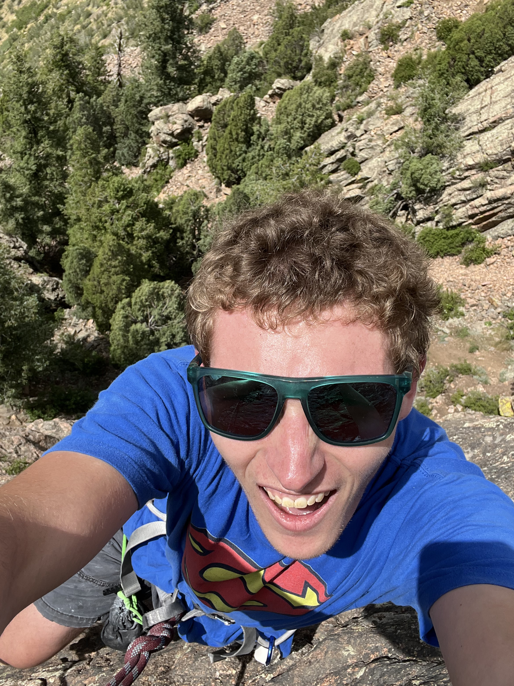

Comprehensive portfolio of works and efforts made by Ryan McLean. Some things to note:
This is not a single-faceted portfolio. It is not meant to demonstrate engineering, math, STEM, or expressive ability. This is a collection in totality of what I have done and am willing/able to share with the world. Thus, it brings experiences in all of these areas and more. Moreover, this is an ever-updating portfolio, so what it is today is not meant to be its final form.
A little about me: I am a curious thinker. I don’t know what I don’t know and am willing to learn. My specialization is in learning. I have developed the ability to throw myself into an unfamiliar area, absorb the information and apply the learnings in incredible turn around times. My professional experience is primarily in STEM fields, but my depth reaches beyond. My philosophy and approach to life is to experience all life has to offer. Thus my background is ever expanding, but as far as formal education, it includes Mathematics, Physics, Aerospace Engineering, Business, Engineering Management, Atmospheric and Oceanic Sciences, and Moral Philosophy.
My work experience is primarily as an educator, teaching a wide range of subjects and age groups from Second Graders up to Graduate Students, on topics from Athletics to bioelectromagnetics, and class sizes from 1-on-1 to lecture halls. In short, if it’s teaching-related, I’ve probably done something similar. As for mathematics, my papers speak for themselves; as for my engineering projects, I have written summaries as much of the models I cannot claim complete ownership of. That is to say, I can talk about them but have not published documentation as it was primarily work done for the University of Colorado Boulder. But the big projects are the design and development of a helical antenna, work on flight simulators, the development of uncrewed gliders, and the design of a cold gas propulsion system.
I’ve recently gotten into stand-up comedy and am currently acquiring certifications in various things. Nothing in particular, just as side quests. Additionally, I just finished working through teaching myself Homotopical Topology with a book written by Anatoly Fomenko and Dmitry Fuchs.
My interests span from anything outdoors to diving into fictional universes like Avatar: The Last Airbender, Star Wars, or DC Comics and so much more. Not to mention learning and problem-solving, and being creative. Which brings me to why publish this site? For two reasons: potential future employers can learn more about me, and because I didn’t know how to develop websites before this project, but I do now.